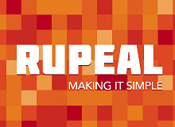

Hai!

We turn bright ideas
Into amazing web products

Making IT simple
Fun comes first!


- Energy - Work
- Curiosity - Learn
- Creativity - Inovate

Tests!
- provide a safety net for developers
- make developers feel more confident -- less FUD
- can boost development speed if done properly
- will help newcomers understand the code faster
- tend to help developers think better about the problems hey are trying to solve


TDD to the rescue!
Hey, it gets better if you write the tests first
- distributes the pain of testing evenly through development
- encourages simple design
- How much to test in each test procedure?
- Good names for tests?
- Functional, unit, integration
- Fakes, mocks
- Aim for 100% code coverage?
The first mistake after learning how to use a cool new tool is over-using it
Tests are important
But not more important than the code itself
Tests are just a tool, not the product
- To hell with code coverage!
- Test the features, not the implementation
- Only high level tests
BDD
BDD in Node.js?
-
Assertion library
- Node.js core assert module
- should.js
- chai
-
Testing framework
- Mocha
- Vows
- Specify
- NodeUnit
Not using a testing framework
Just an assertion library
Mocha
- Use any assertion library that throws an error
- Use a variety of reporters
- File watch!
- Growl!
- Async testing
- Slow tests detection
- Debug